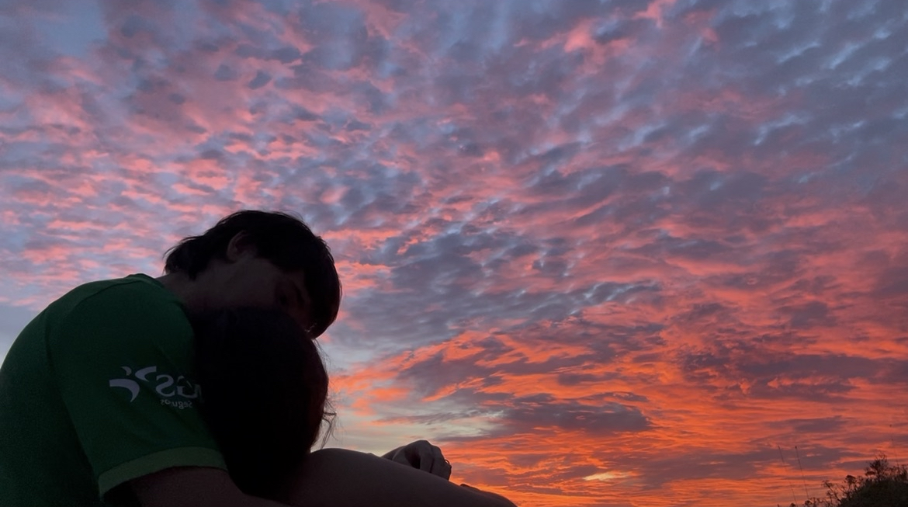

Gracias por ayudarme a ser yo, estar contigo es un regalo para mi a diario. Espero que sigamos creciendo juntos como personas durante muchos años, te amo.

Cartita
Bueno mi amor, ya van 2 añitos juntos y la verdad es que no puedo estar más orgulloso de la decisión que tomé en año nuevo del 2024.
Van dos años, creo que los más sanos y bonitos que hemos tenido nunca, ya sea como amigos o como novios, pero son los más bonitos.
En estos dos años poco a poco estamos aprendiendo cada día mas el uno sobre el otro, y nos estamos ayudando a ser mejores personas, y mejor pareja. Cada vez, tenemos más confianza y vamos aprendiendo como tratar al otro, cosa que, para mí, nos hace invencibles.
Tras estos dos años, en los que nuestras vidas han cambiado un montón, seguimos juntos, que para mí es lo mas importante, que a pesar de los cambios, la gente de alrededor y todas las cosas que han ido pasando, seguimos de la mano en nuestro camino hacia una familia juntitos.
A pesar de lo bueno, también hemos tenido nuestras discusiones, aunque, prueba de ello es nuestra relación, lo que no nos mata, nos hace más fuertes.
Esta carta es un simple gesto para acompañar a mi regalo, que espero que te guste, (pista: te va a gustar).
Finalmente, para despedir esta carta, aunque breve, entenderás que hacer esto me ha llevado mi tiempo JASJAJA, quiero decirte que te amo mucho, y que no me puedo imaginar una vida sin ti, y sin tu confianza, porque cada vez somos mas como el 0 le dice al 2 "vente (20) conmigo que sin ti no soy nada (0).